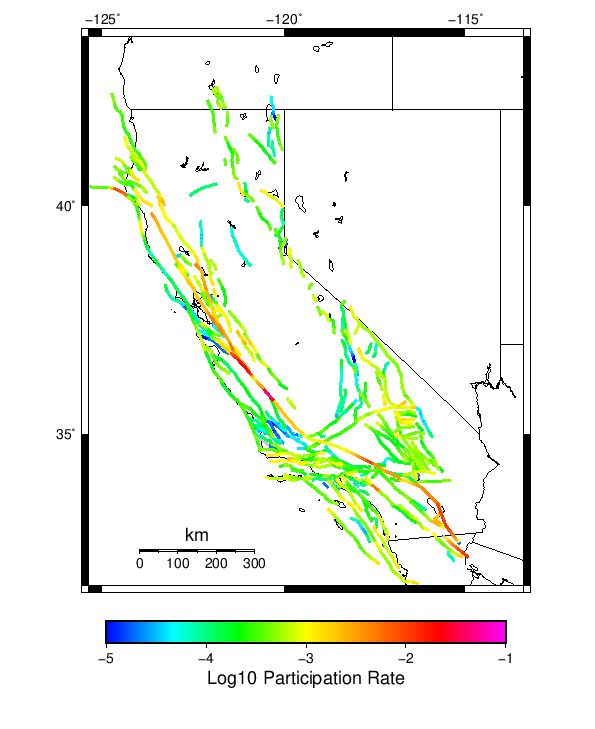
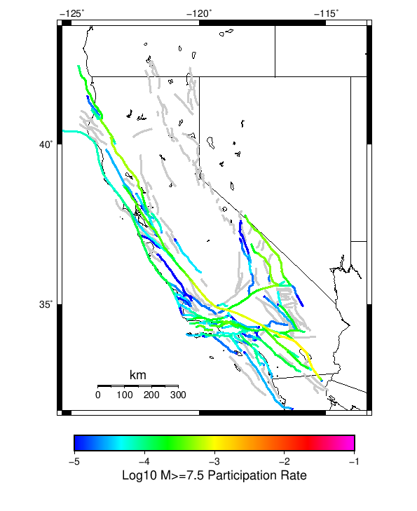

Start 1919, 100 yr, Log10(k)=-2.31, p=1.08, c=0.04, Scale Factor 1.1338, Spontaneous, Historical Catalog Results
| Start 1919, 100 yr, Log10(k)=-2.31, p=1.08, c=0.04, Scale Factor 1.1338, Spontaneous, Historical Catalog |
|---|
| Num Simulations | 1000 |
| Start Time | 1919/01/01 00:00:00 UTC |
| Start Time Epoch Milliseconds | -1609459200000 |
| Duration | 100 Years |
| Includes Spontaneous? | true |
| Trigger Ruptures | (none) |
| Historical Ruptures | 165 Trigger Ruptures |
| First: M7.3 at 1852/01/05 04:40:39 UTC |
| Last: M6.5 at 1918/07/15 00:24:39 UTC |
| Largest: M7.9 at 1857/01/09 16:25:39 UTC |
| Config Generated With | u3etas_config_builder.sh --start-year 1919 --num-simulations 1000 --duration-years 100 --include-spontaneous --historical-catalog --etas-k -2.31 --etas-p 1.08 --etas-c 0.04 --scale-factor 1.1338 --hpc-site USC_HPC --nodes 36 --hours 24 --queue scec |
Table Of Contents
Magnitude Frequency Distribution
(top)
Legend
- Mean (thick black line): mean annual rate across all 1000 catalogs
- 2.5%,97.5% (thin black lines): annual rate percentiles across all 1000 catalogs
- Median (thin blue line): median annual rate across all 1000 catalogs
- Mode (thin cyan line): modal annual rate across all 1000 catalogs (scaled to annualized value)
- Fault System Solution (brown line): long-term MFD from the UCERF3 fault system solution
- 100 yr Probability (thin red line): 100 year probability calculated as the fraction of catalogs with at least 1 occurrence
- 100 yr Supraseismogenic Probability (thin dashed red line): same as above, but only for supraseismogenic ruptures on explicitly modeled UCERF3 faults
- 95% Conf (light red shaded region): binomial 95% confidence bounds on probability
| Mag | Mean | 2.5 %ile | 97.5 %ile | Median | Mode | Long-Term Fault System Solution | 100 yr Probability | 100 yr Prob 95% Conf | 100 yr Supra-Seis Prob |
|---|
| M≥5 | 7.910 | 6.720 | 9.340 | 7.860 | 7.460 | 8.609 | 1.000 (100.00%) | [99.52% 100.00%] | 1.000 (100.00%) |
| M≥5.1 | 6.260 | 5.240 | 7.420 | 6.240 | 6.260 | 6.830 | 1.000 (100.00%) | [99.52% 100.00%] | 1.000 (100.00%) |
| M≥5.2 | 4.957 | 4.150 | 5.870 | 4.940 | 5.280 | 5.417 | 1.000 (100.00%) | [99.52% 100.00%] | 1.000 (100.00%) |
| M≥5.3 | 3.912 | 3.240 | 4.690 | 3.890 | 3.960 | 4.295 | 1.000 (100.00%) | [99.52% 100.00%] | 1.000 (100.00%) |
| M≥5.4 | 3.089 | 2.540 | 3.700 | 3.080 | 2.920 | 3.404 | 1.000 (100.00%) | [99.52% 100.00%] | 1.000 (100.00%) |
| M≥5.5 | 2.429 | 1.960 | 2.980 | 2.420 | 2.510 | 2.696 | 1.000 (100.00%) | [99.52% 100.00%] | 1.000 (100.00%) |
| M≥5.6 | 1.909 | 1.500 | 2.380 | 1.900 | 1.970 | 2.133 | 1.000 (100.00%) | [99.52% 100.00%] | 1.000 (100.00%) |
| M≥5.7 | 1.496 | 1.160 | 1.870 | 1.490 | 1.440 | 1.686 | 1.000 (100.00%) | [99.52% 100.00%] | 1.000 (100.00%) |
| M≥5.8 | 1.167 | 0.900 | 1.480 | 1.160 | 1.080 | 1.331 | 1.000 (100.00%) | [99.52% 100.00%] | 1.000 (100.00%) |
| M≥5.9 | 0.897 | 0.670 | 1.150 | 0.890 | 0.880 | 1.036 | 1.000 (100.00%) | [99.52% 100.00%] | 1.000 (100.00%) |
| M≥6 | 0.713 | 0.510 | 0.920 | 0.710 | 0.630 | 0.836 | 1.000 (100.00%) | [99.52% 100.00%] | 1.000 (100.00%) |
| M≥6.1 | 0.549 | 0.380 | 0.740 | 0.550 | 0.510 | 0.660 | 1.000 (100.00%) | [99.52% 100.00%] | 1.000 (100.00%) |
| M≥6.2 | 0.432 | 0.290 | 0.590 | 0.430 | 0.450 | 0.529 | 1.000 (100.00%) | [99.52% 100.00%] | 1.000 (100.00%) |
| M≥6.3 | 0.336 | 0.220 | 0.470 | 0.340 | 0.340 | 0.420 | 1.000 (100.00%) | [99.52% 100.00%] | 1.000 (100.00%) |
| M≥6.4 | 0.257 | 0.160 | 0.370 | 0.260 | 0.280 | 0.332 | 1.000 (100.00%) | [99.52% 100.00%] | 1.000 (100.00%) |
| M≥6.5 | 0.196 | 0.110 | 0.290 | 0.190 | 0.210 | 0.260 | 1.000 (100.00%) | [99.52% 100.00%] | 1.000 (100.00%) |
| M≥6.6 | 0.150 | 0.080 | 0.230 | 0.150 | 0.160 | 0.205 | 1.000 (100.00%) | [99.52% 100.00%] | 1.000 (100.00%) |
| M≥6.7 | 0.112 | 0.050 | 0.180 | 0.110 | 0.120 | 0.160 | 1.000 (100.00%) | [99.52% 100.00%] | 1.000 (100.00%) |
| M≥6.8 | 0.085 | 0.030 | 0.150 | 0.080 | 0.080 | 0.127 | 1.000 (100.00%) | [99.52% 100.00%] | 1.000 (100.00%) |
| M≥6.9 | 0.064 | 0.020 | 0.120 | 0.060 | 0.050 | 0.100 | 0.999 (99.90%) | [99.35% 99.99%] | 0.995 (99.50%) |
| M≥7 | 0.048 | 0.010 | 0.100 | 0.050 | 0.040 | 0.078 | 0.991 (99.10%) | [98.23% 99.56%] | 0.982 (98.20%) |
| M≥7.1 | 0.035 | 0.000 | 0.070 | 0.030 | 0.030 | 0.060 | 0.972 (97.20%) | [95.92% 98.10%] | 0.948 (94.80%) |
| M≥7.2 | 0.024 | 0.000 | 0.060 | 0.020 | 0.020 | 0.045 | 0.918 (91.80%) | [89.88% 93.39%] | 0.880 (88.00%) |
| M≥7.3 | 0.018 | 0.000 | 0.050 | 0.020 | 0.010 | 0.035 | 0.837 (83.70%) | [81.23% 85.91%] | 0.817 (81.70%) |
| M≥7.4 | 0.012 | 0.000 | 0.040 | 0.010 | 0.010 | 0.027 | 0.708 (70.80%) | [67.86% 73.58%] | 0.692 (69.20%) |
| M≥7.5 | 7.26E-3 | 0.000 | 0.030 | 0.010 | 0.000 | 0.019 | 0.535 (53.50%) | [50.35% 56.62%] | 0.528 (52.80%) |
| M≥7.6 | 4.49E-3 | 0.000 | 0.020 | 0.000 | 0.000 | 0.014 | 0.386 (38.60%) | [35.58% 41.71%] | 0.381 (38.10%) |
| M≥7.7 | 2.24E-3 | 0.000 | 0.010 | 0.000 | 0.000 | 9.58E-3 | 0.208 (20.80%) | [18.35% 23.48%] | 0.206 (20.60%) |
| M≥7.8 | 1.18E-3 | 0.000 | 0.010 | 0.000 | 0.000 | 6.19E-3 | 0.114 (11.40%) | [9.53% 13.57%] | 0.112 (11.20%) |
| M≥7.9 | 5.60E-4 | 0.000 | 0.010 | 0.000 | 0.000 | 3.51E-3 | 0.056 (5.60%) | [4.29% 7.26%] | 0.056 (5.60%) |
| M≥8 | 2.40E-4 | 0.000 | 0.000 | 0.000 | 0.000 | 2.03E-3 | 0.024 (2.40%) | [1.58% 3.61%] | 0.024 (2.40%) |
| M≥8.1 | 3.00E-5 | 0.000 | 0.000 | 0.000 | 0.000 | 1.02E-3 | 3.00E-3 (0.30%) | [0.08% 0.95%] | 3.00E-3 (0.30%) |
| M≥8.2 | 1.00E-5 | 0.000 | 0.000 | 0.000 | 0.000 | 4.48E-4 | 1.00E-3 (0.10%) | [0.01% 0.65%] | 1.00E-3 (0.10%) |
| M≥8.3 | 0.000 | 0.000 | 0.000 | 0.000 | 0.000 | 1.02E-4 | 0.000 (0.00%) | [0.00% 0.48%] | 0.000 (0.00%) |
| M≥8.4 | 0.000 | 0.000 | 0.000 | 0.000 | 0.000 | 0.000 | 0.000 (0.00%) | [0.00% 0.48%] | 0.000 (0.00%) |
| M≥8.5 | 0.000 | 0.000 | 0.000 | 0.000 | 0.000 | 0.000 | 0.000 (0.00%) | [0.00% 0.48%] | 0.000 (0.00%) |
| M≥8.6 | 0.000 | 0.000 | 0.000 | 0.000 | 0.000 | 0.000 | 0.000 (0.00%) | [0.00% 0.48%] | 0.000 (0.00%) |
| M≥8.7 | 0.000 | 0.000 | 0.000 | 0.000 | 0.000 | 0.000 | 0.000 (0.00%) | [0.00% 0.48%] | 0.000 (0.00%) |
| M≥8.8 | 0.000 | 0.000 | 0.000 | 0.000 | 0.000 | 0.000 | 0.000 (0.00%) | [0.00% 0.48%] | 0.000 (0.00%) |
| M≥8.9 | 0.000 | 0.000 | 0.000 | 0.000 | 0.000 | 0.000 | 0.000 (0.00%) | [0.00% 0.48%] | 0.000 (0.00%) |
| M≥9 | 0.000 | 0.000 | 0.000 | 0.000 | 0.000 | 0.000 | 0.000 (0.00%) | [0.00% 0.48%] | 0.000 (0.00%) |
Long Term Rate Variability
(top)
80 Year Variability
(top)

Download CSV Here
| Magnitude | Mean | Median | Mode | Std. Dev. | 2.5 %-ile | 16 %-ile | 84 %-ile | 97.5 %-ile |
|---|
| 5.0 | 7.9324126 | 7.8875 | 7.6625 | 0.7324852 | 6.6125 | 7.2 | 8.65 | 9.45 |
| 5.1 | 6.2808 | 6.2625 | 6.325 | 0.60070324 | 5.2125 | 5.675 | 6.8625 | 7.5125 |
| 5.2 | 4.975375 | 4.9625 | 4.9 | 0.5017813 | 4.0625 | 4.4625 | 5.4625 | 5.9875 |
| 5.3 | 3.9256375 | 3.9125 | 3.975 | 0.41027042 | 3.2125 | 3.5 | 4.3375 | 4.75 |
| 5.4 | 3.1009376 | 3.0875 | 3.0125 | 0.3394492 | 2.4875 | 2.75 | 3.4375 | 3.8 |
| 5.5 | 2.4397376 | 2.425 | 2.3875 | 0.28234208 | 1.9125 | 2.1375 | 2.7125 | 3.025 |
| 5.6 | 1.9183375 | 1.925 | 2.1 | 0.23709923 | 1.4875 | 1.6625 | 2.15 | 2.4 |
| 5.7 | 1.5032375 | 1.5 | 1.575 | 0.19900116 | 1.15 | 1.3 | 1.7125 | 1.9 |
| 5.8 | 1.1737624 | 1.1625 | 1.0625 | 0.16433485 | 0.8625 | 1.0 | 1.3375 | 1.5125 |
| 5.9 | 0.9037 | 0.9 | 0.95 | 0.13781098 | 0.65 | 0.7625 | 1.0375 | 1.175 |
| 6.0 | 0.7184 | 0.7125 | 0.6875 | 0.117960714 | 0.5 | 0.6 | 0.8375 | 0.9625 |
| 6.1 | 0.5540625 | 0.55 | 0.625 | 0.09918128 | 0.3625 | 0.45 | 0.65 | 0.75 |
| 6.2 | 0.4346375 | 0.4375 | 0.4375 | 0.08409985 | 0.275 | 0.35 | 0.5125 | 0.6 |
| 6.3 | 0.338225 | 0.3375 | 0.3125 | 0.072878994 | 0.2 | 0.2625 | 0.4125 | 0.4875 |
| 6.4 | 0.258525 | 0.2625 | 0.25 | 0.06061971 | 0.15 | 0.2 | 0.3125 | 0.375 |
| 6.5 | 0.196625 | 0.2 | 0.2 | 0.05287514 | 0.1 | 0.1375 | 0.25 | 0.3 |
| 6.6 | 0.150975 | 0.15 | 0.15 | 0.04606975 | 0.0625 | 0.1 | 0.2 | 0.25 |
| 6.7 | 0.11215 | 0.1125 | 0.1 | 0.039109234 | 0.0375 | 0.075 | 0.15 | 0.2 |
| 6.8 | 0.084625 | 0.0875 | 0.075 | 0.03417001 | 0.025 | 0.05 | 0.1125 | 0.1625 |
| 6.9 | 0.063975 | 0.0625 | 0.0625 | 0.03006207 | 0.0125 | 0.0375 | 0.0875 | 0.1375 |
| 7.0 | 0.0475875 | 0.05 | 0.0375 | 0.025192425 | 0.0125 | 0.025 | 0.075 | 0.1 |
| 7.1 | 0.034625 | 0.0375 | 0.025 | 0.020953482 | 0.0 | 0.0125 | 0.05 | 0.075 |
| 7.2 | 0.0240125 | 0.025 | 0.0125 | 0.017395651 | 0.0 | 0.0125 | 0.0375 | 0.0625 |
| 7.3 | 0.017375 | 0.0125 | 0.0125 | 0.014659016 | 0.0 | 0.0 | 0.025 | 0.05 |
| 7.4 | 0.0113625 | 0.0125 | 0.0 | 0.011803142 | 0.0 | 0.0 | 0.025 | 0.0375 |
| 7.5 | 0.0069625 | 0.0 | 0.0 | 0.009059493 | 0.0 | 0.0 | 0.0125 | 0.025 |
| 7.6 | 0.0041875 | 0.0 | 0.0 | 0.006881566 | 0.0 | 0.0 | 0.0125 | 0.025 |
| 7.7 | 0.001925 | 0.0 | 0.0 | 0.0047174282 | 0.0 | 0.0 | 0.0 | 0.0125 |
| 7.8 | 9.0E-4 | 0.0 | 0.0 | 0.003328074 | 0.0 | 0.0 | 0.0 | 0.0125 |
| 7.9 | 3.375E-4 | 0.0 | 0.0 | 0.0020270552 | 0.0 | 0.0 | 0.0 | 0.0125 |
| 8.0 | 1.5E-4 | 0.0 | 0.0 | 0.0013617468 | 0.0 | 0.0 | 0.0 | 0.0 |
| 8.1 | 1.25E-5 | 0.0 | 0.0 | 3.952847E-4 | 0.0 | 0.0 | 0.0 | 0.0 |
| 8.2 | 0.0 | 0.0 | 0.0 | 0.0 | 0.0 | 0.0 | 0.0 | 0.0 |
| 8.3 | 0.0 | 0.0 | 0.0 | 0.0 | 0.0 | 0.0 | 0.0 | 0.0 |
| 8.4 | 0.0 | 0.0 | 0.0 | 0.0 | 0.0 | 0.0 | 0.0 | 0.0 |
| 8.5 | 0.0 | 0.0 | 0.0 | 0.0 | 0.0 | 0.0 | 0.0 | 0.0 |
| 8.6 | 0.0 | 0.0 | 0.0 | 0.0 | 0.0 | 0.0 | 0.0 | 0.0 |
| 8.7 | 0.0 | 0.0 | 0.0 | 0.0 | 0.0 | 0.0 | 0.0 | 0.0 |
| 8.8 | 0.0 | 0.0 | 0.0 | 0.0 | 0.0 | 0.0 | 0.0 | 0.0 |
| 8.9 | 0.0 | 0.0 | 0.0 | 0.0 | 0.0 | 0.0 | 0.0 | 0.0 |
| 9.0 | 0.0 | 0.0 | 0.0 | 0.0 | 0.0 | 0.0 | 0.0 | 0.0 |
28 Year Variability
(top)

Download CSV Here
| Magnitude | Mean | Median | Mode | Std. Dev. | 2.5 %-ile | 16 %-ile | 84 %-ile | 97.5 %-ile |
|---|
| 5.0 | 7.9285593 | 7.785714 | 7.571429 | 1.216859 | 5.892857 | 6.75 | 9.107142 | 10.785714 |
| 5.1 | 6.277179 | 6.142857 | 5.928571 | 0.9941065 | 4.642857 | 5.321429 | 7.25 | 8.571428 |
| 5.2 | 4.973131 | 4.892857 | 5.107143 | 0.8248006 | 3.607143 | 4.178571 | 5.75 | 6.821429 |
| 5.3 | 3.9224167 | 3.857143 | 3.9285715 | 0.6811847 | 2.75 | 3.2857144 | 4.571429 | 5.464286 |
| 5.4 | 3.0987618 | 3.0357144 | 2.7857144 | 0.56736845 | 2.107143 | 2.5714285 | 3.642857 | 4.357143 |
| 5.5 | 2.4378333 | 2.392857 | 2.392857 | 0.47663805 | 1.6071428 | 1.9642857 | 2.892857 | 3.5357144 |
| 5.6 | 1.9170595 | 1.8928572 | 1.8214285 | 0.39971852 | 1.2142857 | 1.5357143 | 2.2857144 | 2.8214285 |
| 5.7 | 1.5020833 | 1.4642857 | 1.4285715 | 0.3319285 | 0.9285714 | 1.1785715 | 1.8214285 | 2.2142856 |
| 5.8 | 1.1722976 | 1.1428572 | 1.2142857 | 0.27680182 | 0.6785714 | 0.89285713 | 1.4285715 | 1.75 |
| 5.9 | 0.9017738 | 0.89285713 | 0.89285713 | 0.23214309 | 0.5 | 0.6785714 | 1.1428572 | 1.3928572 |
| 6.0 | 0.7167619 | 0.71428573 | 0.71428573 | 0.19953687 | 0.35714287 | 0.53571427 | 0.89285713 | 1.1428572 |
| 6.1 | 0.5526786 | 0.53571427 | 0.5 | 0.16775604 | 0.25 | 0.39285713 | 0.71428573 | 0.89285713 |
| 6.2 | 0.43357143 | 0.42857143 | 0.39285713 | 0.14412457 | 0.17857143 | 0.2857143 | 0.5714286 | 0.75 |
| 6.3 | 0.3374762 | 0.32142857 | 0.32142857 | 0.12493967 | 0.10714286 | 0.21428572 | 0.4642857 | 0.60714287 |
| 6.4 | 0.258 | 0.25 | 0.21428572 | 0.10612673 | 0.071428575 | 0.14285715 | 0.35714287 | 0.5 |
| 6.5 | 0.19610715 | 0.17857143 | 0.17857143 | 0.09164117 | 0.035714287 | 0.10714286 | 0.2857143 | 0.39285713 |
| 6.6 | 0.15058333 | 0.14285715 | 0.14285715 | 0.07938309 | 0.035714287 | 0.071428575 | 0.21428572 | 0.32142857 |
| 6.7 | 0.11217857 | 0.10714286 | 0.071428575 | 0.067369536 | 0.0 | 0.035714287 | 0.17857143 | 0.25 |
| 6.8 | 0.08457143 | 0.071428575 | 0.071428575 | 0.05851919 | 0.0 | 0.035714287 | 0.14285715 | 0.21428572 |
| 6.9 | 0.063869044 | 0.071428575 | 0.035714287 | 0.051079493 | 0.0 | 0.0 | 0.10714286 | 0.17857143 |
| 7.0 | 0.04763095 | 0.035714287 | 0.035714287 | 0.044169053 | 0.0 | 0.0 | 0.071428575 | 0.14285715 |
| 7.1 | 0.03454762 | 0.035714287 | 0.0 | 0.03704586 | 0.0 | 0.0 | 0.071428575 | 0.10714286 |
| 7.2 | 0.023869047 | 0.0 | 0.0 | 0.030456552 | 0.0 | 0.0 | 0.035714287 | 0.10714286 |
| 7.3 | 0.017333332 | 0.0 | 0.0 | 0.025620442 | 0.0 | 0.0 | 0.035714287 | 0.071428575 |
| 7.4 | 0.011309524 | 0.0 | 0.0 | 0.020614496 | 0.0 | 0.0 | 0.035714287 | 0.071428575 |
| 7.5 | 0.006916667 | 0.0 | 0.0 | 0.01590092 | 0.0 | 0.0 | 0.035714287 | 0.035714287 |
| 7.6 | 0.004190476 | 0.0 | 0.0 | 0.012108032 | 0.0 | 0.0 | 0.0 | 0.035714287 |
| 7.7 | 0.0019880952 | 0.0 | 0.0 | 0.008293038 | 0.0 | 0.0 | 0.0 | 0.035714287 |
| 7.8 | 9.642857E-4 | 0.0 | 0.0 | 0.005862655 | 0.0 | 0.0 | 0.0 | 0.035714287 |
| 7.9 | 4.047619E-4 | 0.0 | 0.0 | 0.0037810998 | 0.0 | 0.0 | 0.0 | 0.0 |
| 8.0 | 1.7857143E-4 | 0.0 | 0.0 | 0.00251948 | 0.0 | 0.0 | 0.0 | 0.0 |
| 8.1 | 1.1904762E-5 | 0.0 | 0.0 | 6.5205066E-4 | 0.0 | 0.0 | 0.0 | 0.0 |
| 8.2 | 0.0 | 0.0 | 0.0 | 0.0 | 0.0 | 0.0 | 0.0 | 0.0 |
| 8.3 | 0.0 | 0.0 | 0.0 | 0.0 | 0.0 | 0.0 | 0.0 | 0.0 |
| 8.4 | 0.0 | 0.0 | 0.0 | 0.0 | 0.0 | 0.0 | 0.0 | 0.0 |
| 8.5 | 0.0 | 0.0 | 0.0 | 0.0 | 0.0 | 0.0 | 0.0 | 0.0 |
| 8.6 | 0.0 | 0.0 | 0.0 | 0.0 | 0.0 | 0.0 | 0.0 | 0.0 |
| 8.7 | 0.0 | 0.0 | 0.0 | 0.0 | 0.0 | 0.0 | 0.0 | 0.0 |
| 8.8 | 0.0 | 0.0 | 0.0 | 0.0 | 0.0 | 0.0 | 0.0 | 0.0 |
| 8.9 | 0.0 | 0.0 | 0.0 | 0.0 | 0.0 | 0.0 | 0.0 | 0.0 |
| 9.0 | 0.0 | 0.0 | 0.0 | 0.0 | 0.0 | 0.0 | 0.0 | 0.0 |
Variability Duration Dependence
(top)
Download CSV Here
| Duration (years) | Mean | Median | Mode | Std. Dev. | 2.5 %-ile | 16 %-ile | 84 %-ile | 97.5 %-ile |
|---|
| 1.0 | 7.91045 | 7.0 | 6.0 | 5.167876 | 2.0 | 4.0 | 11.0 | 20.0 |
| 2.0 | 7.91045 | 7.0 | 6.5 | 3.8643918 | 3.0 | 5.0 | 10.5 | 17.5 |
| 4.0 | 7.91045 | 7.5 | 6.5 | 2.8822224 | 4.0 | 5.5 | 10.25 | 15.0 |
| 6.0 | 7.911698 | 7.5 | 7.3333335 | 2.4178188 | 4.5 | 5.8333335 | 9.833333 | 14.0 |
| 8.0 | 7.911698 | 7.625 | 6.875 | 2.1280513 | 4.75 | 6.0 | 9.75 | 13.125 |
| 10.0 | 7.91045 | 7.6 | 7.0 | 1.9429646 | 5.0 | 6.2 | 9.6 | 12.7 |
| 12.0 | 7.911698 | 7.6666665 | 7.0 | 1.7852097 | 5.25 | 6.25 | 9.5 | 12.333333 |
| 14.0 | 7.9116836 | 7.642857 | 7.5 | 1.6681634 | 5.357143 | 6.357143 | 9.428572 | 12.0 |
| 16.0 | 7.911698 | 7.6875 | 7.3125 | 1.5755543 | 5.5 | 6.4375 | 9.3125 | 11.8125 |
| 18.0 | 7.9136887 | 7.7222223 | 7.388889 | 1.4774112 | 5.611111 | 6.5 | 9.277778 | 11.444445 |
| 20.0 | 7.91045 | 7.7 | 7.75 | 1.4264067 | 5.7 | 6.6 | 9.2 | 11.35 |
| 22.0 | 7.919739 | 7.7727275 | 7.7272725 | 1.356237 | 5.7727275 | 6.6363635 | 9.136364 | 11.136364 |
| 24.0 | 7.911698 | 7.7083335 | 7.3333335 | 1.3099232 | 5.8333335 | 6.6666665 | 9.125 | 10.958333 |
| 26.0 | 7.93009 | 7.8076925 | 8.192307 | 1.2647626 | 5.8846154 | 6.6923075 | 9.115385 | 10.884615 |
| 28.0 | 7.9285593 | 7.785714 | 7.571429 | 1.216859 | 5.892857 | 6.75 | 9.107142 | 10.785714 |
| 30.0 | 7.9136887 | 7.766667 | 7.733333 | 1.1756861 | 6.0 | 6.8 | 9.066667 | 10.566667 |
| 32.0 | 7.911698 | 7.78125 | 7.4375 | 1.1396394 | 6.0 | 6.84375 | 9.0 | 10.5 |
| 34.0 | 7.9446764 | 7.8235292 | 7.852941 | 1.0944916 | 6.0882354 | 6.9117646 | 9.029411 | 10.411765 |
| 36.0 | 7.935458 | 7.8055553 | 7.5277777 | 1.0655382 | 6.1666665 | 6.9166665 | 8.972222 | 10.277778 |
| 38.0 | 7.932579 | 7.7894735 | 7.1578946 | 1.0432818 | 6.1842103 | 6.9210525 | 8.947369 | 10.263158 |
| 40.0 | 7.9324126 | 7.825 | 7.875 | 1.0197942 | 6.2 | 6.95 | 8.925 | 10.2 |
| 42.0 | 7.9285593 | 7.8095236 | 7.952381 | 0.9982082 | 6.1904764 | 6.952381 | 8.904762 | 10.142858 |
| 44.0 | 7.919739 | 7.818182 | 7.659091 | 0.98137784 | 6.2272725 | 6.9772725 | 8.909091 | 10.068182 |
| 46.0 | 7.910674 | 7.7826085 | 7.7173915 | 0.96348584 | 6.2173915 | 6.978261 | 8.869565 | 10.0 |
| 48.0 | 7.911698 | 7.8125 | 7.6458335 | 0.9445495 | 6.2708335 | 7.0208335 | 8.854167 | 9.979167 |
| 50.0 | 7.91045 | 7.8 | 7.6 | 0.9336533 | 6.26 | 7.04 | 8.82 | 9.98 |
| 52.0 | 7.9906344 | 7.9038463 | 7.8846154 | 0.89957255 | 6.3846154 | 7.1153846 | 8.884615 | 9.884615 |
| 54.0 | 7.978352 | 7.888889 | 7.4814816 | 0.88085 | 6.4444447 | 7.1296296 | 8.833333 | 9.796296 |
| 56.0 | 7.9760895 | 7.892857 | 7.321429 | 0.8676681 | 6.482143 | 7.125 | 8.821428 | 9.75 |
| 58.0 | 7.9695687 | 7.913793 | 8.172414 | 0.8511916 | 6.4827585 | 7.137931 | 8.775862 | 9.706897 |
| 60.0 | 7.9622 | 7.9 | 8.133333 | 0.83317286 | 6.5333333 | 7.15 | 8.766666 | 9.716666 |
| 62.0 | 7.950984 | 7.887097 | 7.66129 | 0.81886303 | 6.483871 | 7.16129 | 8.758064 | 9.67742 |
| 64.0 | 7.950156 | 7.890625 | 8.078125 | 0.8048278 | 6.5 | 7.15625 | 8.734375 | 9.609375 |
| 66.0 | 7.946288 | 7.878788 | 7.818182 | 0.794789 | 6.5151515 | 7.151515 | 8.742424 | 9.560606 |
| 68.0 | 7.9446764 | 7.897059 | 8.382353 | 0.78836274 | 6.4852943 | 7.1764708 | 8.720589 | 9.6029415 |
| 70.0 | 7.9399714 | 7.885714 | 7.7714286 | 0.7809125 | 6.5142856 | 7.1714287 | 8.742857 | 9.528571 |
| 72.0 | 7.935458 | 7.9027777 | 8.166667 | 0.76989996 | 6.5416665 | 7.1666665 | 8.722222 | 9.486111 |
| 74.0 | 7.9387026 | 7.891892 | 7.9864864 | 0.7650207 | 6.5675673 | 7.1621623 | 8.716216 | 9.527027 |
| 76.0 | 7.932579 | 7.868421 | 7.7105265 | 0.75244695 | 6.5921054 | 7.1842103 | 8.710526 | 9.473684 |
| 78.0 | 7.93009 | 7.8846154 | 8.141026 | 0.74374616 | 6.576923 | 7.1923075 | 8.692307 | 9.461538 |
| 80.0 | 7.9324126 | 7.8875 | 7.6625 | 0.7324852 | 6.6125 | 7.2 | 8.65 | 9.45 |
| 82.0 | 7.930256 | 7.890244 | 8.158537 | 0.7239123 | 6.609756 | 7.207317 | 8.646341 | 9.426829 |
| 84.0 | 7.9285593 | 7.8809524 | 7.8690476 | 0.7165644 | 6.642857 | 7.214286 | 8.619047 | 9.380953 |
| 86.0 | 7.925221 | 7.883721 | 8.546512 | 0.707978 | 6.6511626 | 7.2093024 | 8.604651 | 9.395349 |
| 88.0 | 7.919739 | 7.875 | 7.8636365 | 0.70391524 | 6.625 | 7.181818 | 8.602273 | 9.375 |
| 90.0 | 7.9136887 | 7.866667 | 7.7 | 0.6991833 | 6.6222224 | 7.2222223 | 8.588889 | 9.344444 |
| 92.0 | 7.910674 | 7.847826 | 7.7826085 | 0.69098294 | 6.630435 | 7.228261 | 8.565217 | 9.358696 |
| 94.0 | 7.910564 | 7.861702 | 7.691489 | 0.6868512 | 6.680851 | 7.212766 | 8.563829 | 9.351064 |
| 96.0 | 7.911698 | 7.8645835 | 8.333333 | 0.6771129 | 6.71875 | 7.25 | 8.572917 | 9.364583 |
| 98.0 | 7.9116836 | 7.857143 | 7.7244897 | 0.6742465 | 6.7244897 | 7.255102 | 8.581633 | 9.336735 |
| 100.0 | 7.91045 | 7.86 | 7.46 | 0.6761431 | 6.72 | 7.24 | 8.56 | 9.34 |
Simulation Stationarity
(top)
Section Participation
(top)
Section Participation Plots
(top)
| Min Mag | Complete Catalog (including spontaneous) | Ratio WRT Long-Term Model |
|---|
| All Supra. Seis. |  | |
| M≥6.5 | | |
| M≥7 | | |
| M≥7.5 |  | |
| M≥8 | | |
Supra-Seismogenic Parent Sections Table
(top)
First 10 of 313 with matching ruptures shown
| Parent Name | Total Mean Annual Rate | Total 100 Year Prob | Total 100 Year 95% Conf | Long-Term Fault System Solution Rate |
|---|
| San Andreas (Parkfield) | 0.0446 | 1.000 (100.00%) | [99.52% 100.00%] | 0.047238618 |
| San Andreas (Creeping Section) 2011 CFM | 0.02632 | 0.967 (96.70%) | [95.34% 97.68%] | 0.03419009 |
| San Andreas (Mojave S) | 0.01729 | 0.881 (88.10%) | [85.89% 90.01%] | 0.016211301 |
| Mendocino | 0.01612 | 0.865 (86.50%) | [84.19% 88.53%] | 0.028919645 |
| Cerro Prieto | 0.01256 | 0.832 (83.20%) | [80.70% 85.44%] | 0.015186971 |
| Imperial | 0.0116 | 0.803 (80.30%) | [77.67% 82.69%] | 0.014349225 |
| Brawley (Seismic Zone) alt 1 | 0.01084 | 0.784 (78.40%) | [75.69% 80.89%] | 0.013392845 |
| Hayward (So) 2011 CFM | 0.00667 | 0.555 (55.50%) | [52.35% 58.60%] | 0.009440966 |
| Hunting Creek - Berryessa 2011 CFM | 0.00655 | 0.509 (50.90%) | [47.75% 54.04%] | 0.0072375466 |
| Elsinore (Glen Ivy) rev | 0.00639 | 0.513 (51.30%) | [48.15% 54.44%] | 0.008455746 |
M≥6.5 Parent Sections Table
(top)
First 10 of 304 with matching ruptures shown
| Parent Name | Total Mean Annual Rate | Total 100 Year Prob | Total 100 Year 95% Conf | Long-Term Fault System Solution Rate |
|---|
| Cerro Prieto | 0.01081 | 0.784 (78.40%) | [75.69% 80.89%] | 0.013091409 |
| Imperial | 0.00762 | 0.636 (63.60%) | [60.52% 66.57%] | 0.0096799815 |
| Brawley (Seismic Zone) alt 1 | 0.00719 | 0.607 (60.70%) | [57.59% 63.73%] | 0.009075132 |
| San Andreas (Creeping Section) 2011 CFM | 0.00602 | 0.474 (47.40%) | [44.27% 50.55%] | 0.012216282 |
| Mendocino | 0.00598 | 0.490 (49.00%) | [45.86% 52.15%] | 0.012516479 |
| Hayward (So) 2011 CFM | 0.00545 | 0.473 (47.30%) | [44.17% 50.45%] | 0.008140643 |
| San Andreas (Coachella) rev | 0.00499 | 0.476 (47.60%) | [44.47% 50.75%] | 0.005337052 |
| San Andreas (San Bernardino S) | 0.00415 | 0.382 (38.20%) | [35.19% 41.30%] | 0.005577705 |
| San Andreas (San Bernardino N) | 0.00399 | 0.358 (35.80%) | [32.84% 38.87%] | 0.0067538084 |
| San Andreas (San Gorgonio Pass-Garnet HIll) | 0.00365 | 0.349 (34.90%) | [31.96% 37.96%] | 0.0042052693 |
M≥7 Parent Sections Table
(top)
First 10 of 264 with matching ruptures shown
| Parent Name | Total Mean Annual Rate | Total 100 Year Prob | Total 100 Year 95% Conf | Long-Term Fault System Solution Rate |
|---|
| San Andreas (Coachella) rev | 0.00417 | 0.407 (40.70%) | [37.65% 43.83%] | 0.004435764 |
| Brawley (Seismic Zone) alt 1 | 0.00384 | 0.375 (37.50%) | [34.50% 40.59%] | 0.003998075 |
| Imperial | 0.00375 | 0.367 (36.70%) | [33.72% 39.78%] | 0.0038191879 |
| Cerro Prieto | 0.00352 | 0.333 (33.30%) | [30.40% 36.33%] | 0.0048668785 |
| San Andreas (San Gorgonio Pass-Garnet HIll) | 0.00322 | 0.315 (31.50%) | [28.65% 34.50%] | 0.0037061623 |
| Maacama 2011 CFM | 0.00226 | 0.218 (21.80%) | [19.30% 24.52%] | 0.0036327762 |
| San Andreas (Creeping Section) 2011 CFM | 0.00215 | 0.195 (19.50%) | [17.12% 22.12%] | 0.007612852 |
| San Andreas (Cholame) rev | 0.00194 | 0.191 (19.10%) | [16.74% 21.71%] | 0.005722108 |
| San Andreas (San Bernardino N) | 0.0018 | 0.173 (17.30%) | [15.03% 19.82%] | 0.004749499 |
| San Andreas (Carrizo) rev | 0.00175 | 0.173 (17.30%) | [15.03% 19.82%] | 0.0057427646 |
M≥7.5 Parent Sections Table
(top)
First 10 of 175 with matching ruptures shown
| Parent Name | Total Mean Annual Rate | Total 100 Year Prob | Total 100 Year 95% Conf | Long-Term Fault System Solution Rate |
|---|
| San Andreas (Coachella) rev | 0.00117 | 0.116 (11.60%) | [9.71% 13.79%] | 0.0021020647 |
| San Andreas (San Gorgonio Pass-Garnet HIll) | 0.00107 | 0.107 (10.70%) | [8.89% 12.82%] | 0.0020508107 |
| Brawley (Seismic Zone) alt 1 | 0.00104 | 0.103 (10.30%) | [8.52% 12.39%] | 0.0017912637 |
| San Andreas (Mojave N) | 0.00103 | 0.103 (10.30%) | [8.52% 12.39%] | 0.0049894005 |
| San Andreas (San Bernardino S) | 0.00103 | 0.103 (10.30%) | [8.52% 12.39%] | 0.0022481368 |
| Imperial | 9.8E-4 | 0.097 (9.70%) | [7.97% 11.75%] | 0.0016334486 |
| San Andreas (Mojave S) | 9.5E-4 | 0.095 (9.50%) | [7.79% 11.53%] | 0.0045267143 |
| San Andreas (San Bernardino N) | 9.4E-4 | 0.094 (9.40%) | [7.70% 11.42%] | 0.0037959707 |
| San Andreas (Big Bend) | 8.5E-4 | 0.085 (8.50%) | [6.88% 10.45%] | 0.0044245115 |
| San Andreas (Cholame) rev | 7.8E-4 | 0.078 (7.80%) | [6.25% 9.68%] | 0.0040264158 |
M≥8 Parent Sections Table
(top)
First 10 of 47 with matching ruptures shown
| Parent Name | Total Mean Annual Rate | Total 100 Year Prob | Total 100 Year 95% Conf | Long-Term Fault System Solution Rate |
|---|
| San Andreas (Mojave N) | 2.2E-4 | 0.022 (2.20%) | [1.42% 3.37%] | 0.0018098651 |
| San Andreas (Mojave S) | 2.0E-4 | 0.020 (2.00%) | [1.26% 3.13%] | 0.0017636013 |
| San Andreas (San Bernardino N) | 2.0E-4 | 0.020 (2.00%) | [1.26% 3.13%] | 0.0016807786 |
| San Andreas (Big Bend) | 1.8E-4 | 0.018 (1.80%) | [1.10% 2.89%] | 0.0017453934 |
| San Andreas (Carrizo) rev | 1.8E-4 | 0.018 (1.80%) | [1.10% 2.89%] | 0.0017508415 |
| San Andreas (Cholame) rev | 1.8E-4 | 0.018 (1.80%) | [1.10% 2.89%] | 0.0017193216 |
| San Andreas (Parkfield) | 1.3E-4 | 0.013 (1.30%) | [0.72% 2.27%] | 0.0015122787 |
| San Andreas (Creeping Section) 2011 CFM | 1.2E-4 | 0.012 (1.20%) | [0.65% 2.15%] | 0.0014250289 |
| San Andreas (San Bernardino S) | 1.1E-4 | 0.011 (1.10%) | [0.58% 2.02%] | 6.4807484E-4 |
| San Andreas (San Gorgonio Pass-Garnet HIll) | 1.0E-4 | 0.010 (1.00%) | [0.51% 1.90%] | 5.951473E-4 |
Gridded Nucleation
(top)
| Min Mag | Complete Catalog (including spontaneous) | Ratio WRT Long-Term Model |
|---|
| M≥5 |  | |
| M≥6 | | |
| M≥7 | | |
(top)
{
"numSimulations": 1000,
"duration": 100.0,
"startYear": 1919,
"includeSpontaneous": true,
"randomSeed": 1567314542636,
"binaryOutput": true,
"binaryOutputFilters": [
{
"prefix": "results_complete",
"descendantsOnly": false
},
{
"prefix": "results_m5_preserve_chain",
"minMag": 5.0,
"preserveChainBelowMag": true,
"descendantsOnly": false
}
],
"forceRecalc": false,
"simulationName": "Start 1919, 100 yr, Log10(k)\u003d-2.31, p\u003d1.08, c\u003d0.04, Scale Factor 1.1338, Spontaneous, Historical Catalog",
"numRetries": 3,
"outputDir": "${ETAS_SIM_DIR}/2019_08_31-Start1919_100yr_Log10_k_2p31_p1p08_c0p04_ScaleFactor1p1338_Spontaneous_HistoricalCatalog",
"triggerCatalog": "${ETAS_LAUNCHER}/inputs/u3_historical_catalog.txt",
"triggerCatalogSurfaceMappings": "${ETAS_LAUNCHER}/inputs/u3_historical_catalog_finite_fault_mappings.xml",
"treatTriggerCatalogAsSpontaneous": true,
"cacheDir": "${ETAS_LAUNCHER}/inputs/cache_fm3p1_ba",
"fssFile": "${ETAS_LAUNCHER}/inputs/2013_05_10-ucerf3p3-production-10runs_COMPOUND_SOL_FM3_1_SpatSeisU3_MEAN_BRANCH_AVG_SOL.zip",
"probModel": "FULL_TD",
"applySubSeisForSupraNucl": true,
"totRateScaleFactor": 1.1338,
"gridSeisCorr": true,
"timeIndependentERF": false,
"griddedOnly": false,
"imposeGR": false,
"includeIndirectTriggering": true,
"gridSeisDiscr": 0.1,
"catalogCompletenessModel": "RELAXED",
"etas_p": 1.08,
"etas_c": 0.04,
"etas_log10_k": -2.31,
"configCommand": "u3etas_config_builder.sh --start-year 1919 --num-simulations 1000 --duration-years 100 --include-spontaneous --historical-catalog --etas-k -2.31 --etas-p 1.08 --etas-c 0.04 --scale-factor 1.1338 --hpc-site USC_HPC --nodes 36 --hours 24 --queue scec",
"configTime": 1567314542636
}